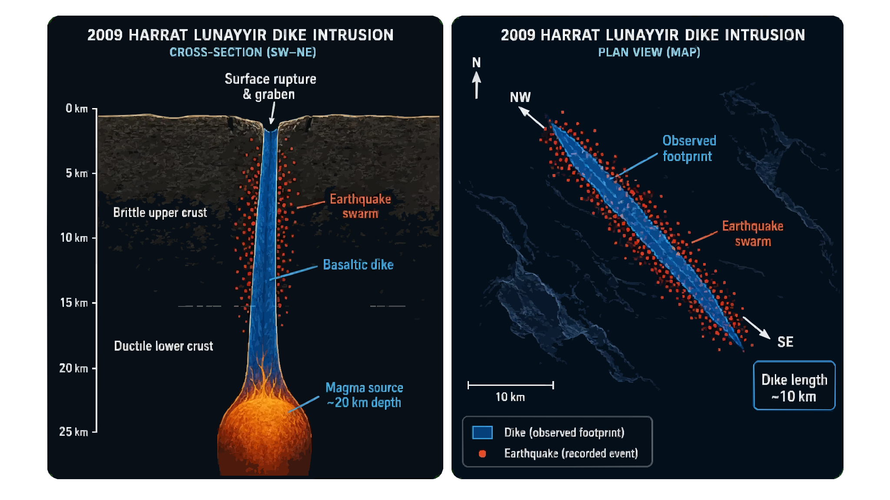
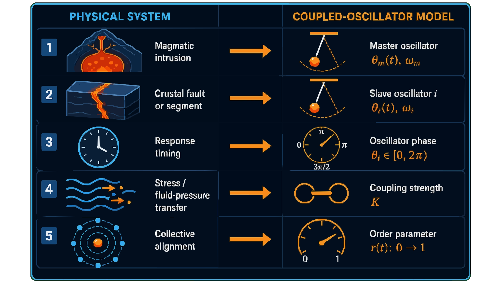
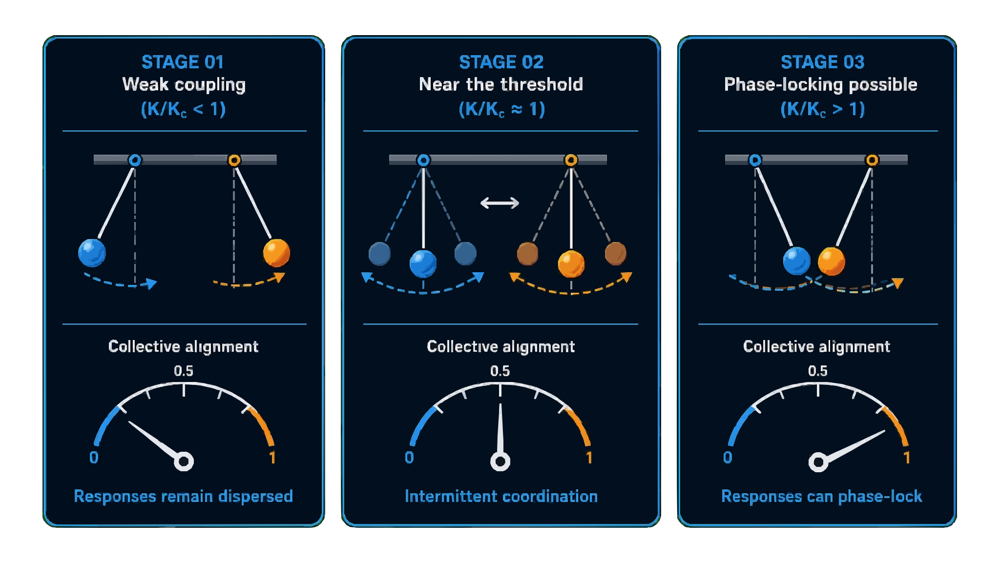
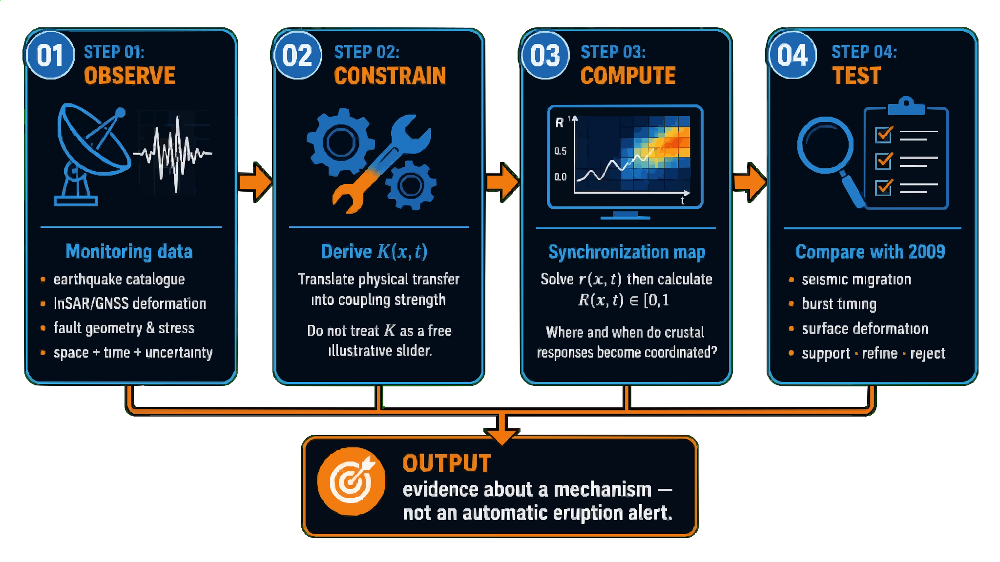

Model Results


Kuramoto Phase-Coupled Oscillator · 2009 Dike Intrusion · Saudi Arabia
This page explores whether earthquake bursts during the 2009 Harrat Lunayyir dike intrusion show signs of synchronisation — the magma column and brittle crust falling into a shared rhythm.

A crack filled with rising molten basalt — approximately 10 km long with a maximum opening of 2–4 m, pushing up from roughly 20 km depth — produced a swarm of roughly 30,000 earthquakes over several months.


